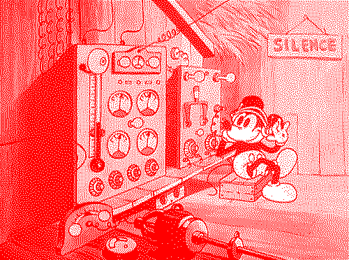
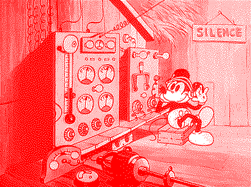

Workshop: Radio as an Educational Tool
MA Information Design
Design Academy Eindhoven
16–18 November 2020
A full programme will be broadcasted on Wednesday November 18th 12–18u CET!
MA Information Design
Design Academy Eindhoven
16–18 November 2020
A full programme will be broadcasted on Wednesday November 18th 12–18u CET!
→ Assignment
Collectively create our own radio station to go live on day 3!

Collectively create our own radio station to go live on day 3!
